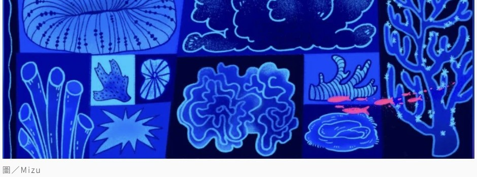

Coral larvae counting on the 3D printed settlement dome — tracking how many tiny coral babies choose to call our structure home. #coralbaby #3dprintclay 在 3D 列印的穹頂結構計算珊瑚幼苗的附著量，記錄有多少珊瑚寶寶選擇在我們的結構上安家。#coralbaby #3dprintclay
What I want to pirate is citation numbers for my research papers. Happy Halloween from the Hawaii Institute of Marine Biology — where the scariest thing is your h-index. 我最想搶的東西是論文引用次數。夏威夷海洋生物研究所萬聖節快樂——這裡最可怕的東西是你的 h-index。
Completed the third annual Structure from Motion (SfM) surveys at five 10×10 m monitoring stations at the Kenting outlet site. Many thanks to Prof. Fan Tung-Yung (NMMBA) and lab partners Ting-Hui and Vicky for their support. 完成第三年度墾丁出水口五個 10×10 m Structure from Motion 監測站的調查，感謝海生館樊同雲老師以及珊瑚實驗室夥伴庭卉與 Vicky 的協助。


As a graduate student in Hawaiʻi studying coral morphology, I spend a lot of time judging corals by their appearance — which makes me a card-carrying member of the coral beauty association. But there is good reason: corals are modular organisms that can split and fuse freely, making age a meaningless metric. Size becomes the next best proxy. 身為一名在夏威夷研究珊瑚形態的研究生，我每天的工作就是盯著珊瑚的外表——妥妥的外貌協會成員。這其實有充分的理由：珊瑚是模組化生物，能自由分裂融合，年齡因此毫無意義，體型便成了最佳替代指標。
Size reflects a colony's energy strategy — small colonies invest in growth, large ones in reproduction. This also informs restoration: splitting large colonies into smaller fragments accelerates area coverage and spreads genetic risk, though the fragments start out weaker. 體型反映珊瑚的能量策略——小群體主要投資在生長，大群體則專注於繁衍。這也應用於復育：將大群體分裂成小片段，可加速面積擴張並分散滅絕風險，儘管分身初期較為脆弱。
Our latest research adds shape to the picture. Using circularity as a metric, we found that large, round colonies have the highest survival rates — the overachievers of the coral world. Irregularly shaped colonies split more often, a gamble that can lead to either recovery or death. 我們的最新研究將形狀也納入考量，以圓度量化群體外型，發現又大又圓的群體存活率最高——珊瑚界的人生勝利組。形狀不規則的群體則較常分裂，是一場要嘛涅槃、要嘛終結的賭注。

Presented a poster on the relationship between coral colony morphology, demographic fates, and growth rates at the Hawaiʻi Conservation Conference in Honolulu. Got to reconnect with many friends from HIMB — and had a close encounter with an enormous nēnē (the native Hawaiian goose, and a protected species). What a treat. 在火奴魯魯夏威夷保育研討會發表海報，探討珊瑚群體形態與族群命運及生長率之間的關係。看到很多來自夏威夷海洋生物研究所的好朋友，還遇到一隻超大夏威夷在地保育類鵝鵝（夏威夷雁），真是太好了。


Published in Science Monthly (科學月刊) Issue 602. We often joke about having "goldfish memory," but is fish cognition really that poor? This article introduces behavioural experiments using zebrafish (Danio rerio) as a model organism, exploring active avoidance training, colour discrimination learning, and long-term memory retention — demonstrating that fish are far more capable learners than popular culture suggests. 刊登於《科學月刊》第 602 期。人們常以「金魚腦」自嘲記憶差，但魚類的認知能力真的那麼糟嗎？本文以模式生物斑馬魚為主角，介紹主動迴避訓練、顏色辨識學習與長期記憶保留等行為實驗，證明魚類的學習能力遠超通俗文化的想像。
Published in Science & Technology Reports (科技報導) Issue 451. Coral reefs possess highly complex three-dimensional structures that serve as essential habitat infrastructure for marine organisms. This article introduces Structure from Motion (SfM) photogrammetry — a technique that converts 2D photographs into detailed 3D models — and its applications in coral reef spatial analysis, from quantifying surface rugosity and slope to informing marine protected area planning. 刊登於《科技報導》第 451 期。珊瑚礁擁有極其複雜的三維結構，是海洋生物不可或缺的棲地基礎設施。本文介紹 SfM（運動恢復結構）攝影測量技術——一種將 2D 照片轉換為精細 3D 模型的方法——及其在珊瑚礁空間分析上的應用，包括量化表面粗糙度、斜率等參數，以及輔助海洋保護區劃設規劃。